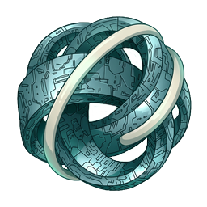
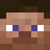
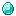
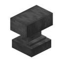

УСТРОЙСТВО ОКАМЕНЕНИЯ
МЕДУЗА
Отсчёт в руке. Бросок с отскоками.
Расширяющаяся сфера, превращающая
живых существ в камень.

zitraksmode:medusaЗелёная волна
Сфера растёт со скоростью 32 блока в секунду. Стены её не останавливают. У владельца нет иммунитета: его тоже заденет в пределах сферы.
Геометрия стенда — иллюстрация. Текстуры предмета, сферы и камня взяты из мода. Правила, скорость волны и отсчёт связаны с одной симуляцией; скрытая вкладка ставит её на паузу.
Камень вместо кожи
Модель и поза сохраняются, меняется текстура. Пока существо окаменело, оно неподвижно и восстанавливает 15% максимального здоровья в секунду.

Игрок · владелец
Зомби-житель излечивается при завершении окаменения.
Урон по камню ＋
Коэффициент применяется перед бронёй.
Возвращение заряда
После активации устройство не исчезает. Разряженная Медуза остаётся в мире, падает на землю и доступна для подбора.

1 АЛМАЗ
Стоимость: 1 уровень опытаМатериалы стенда: 2 алмазаСначала нужно разрядить и подобрать устройство. Настройки и Сила науки сохраняются.
Четыре железных блока, четыре редстоуновых блока и один алмаз. Новая Медуза заряжена.
Таймер и сохранённые настройки
Подбор или бросок уже запущенной Медузы сохраняет абсолютный срок активации. Изменение задержки не перезапускает старый отсчёт. Пока устройство в руке, изменение радиуса относится к нему; после броска летит отдельная копия его настроек.
Предел Силы науки
Без чар максимум 32 блока; I — 64, II — 128, III — 256, IV — 512. Все четыре уровня доступны со стола зачарований 30-го уровня. «12 800 000 метров» — описание достижения, не игровой радиус.
Достижения
5 достижений · 175 XP